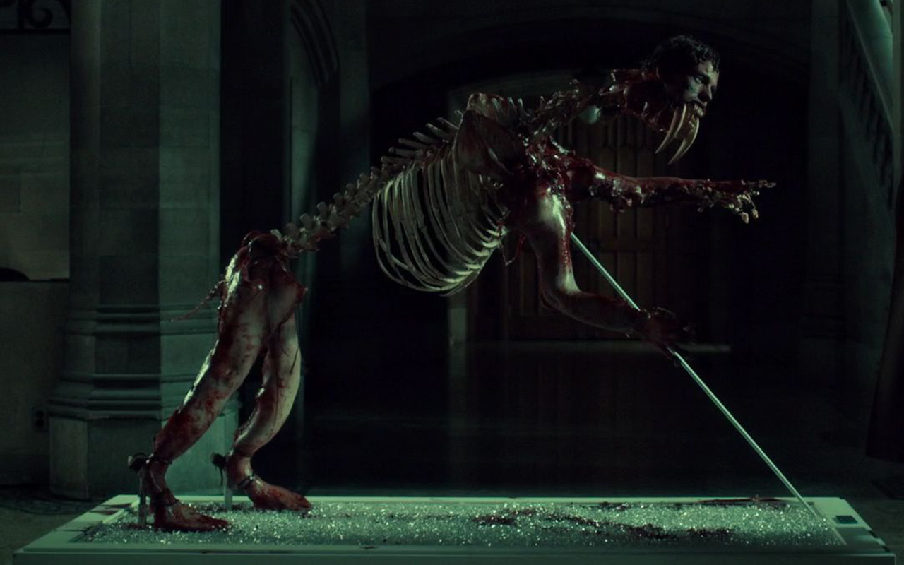

A truly transformative display by the Ripper's protege and greatest triumph Graham. The piece features Graham's second kill, one of his landmark displays. The intricate beauty and delicateness of the skillful combination and the recognization and respect to the subject's identity makes this a work of incredible significance, and has been known to trigger hours of deep contemplation.